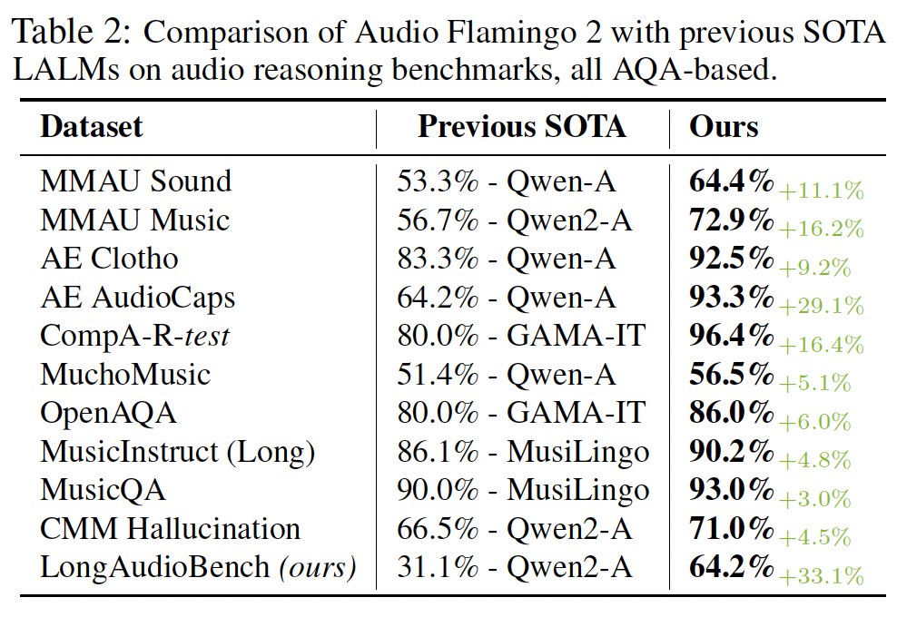

Audio Flamingo 2
An Audio-Language Model with Long-Audio Understanding and Expert Reasoning Abilities
An Audio-Language Model with Long-Audio Understanding and Expert Reasoning Abilities
Understanding and reasoning over non-speech sounds and music are crucial for both humans and AI agents to interact effectively with their environments. In this paper, we introduce Audio Flamingo 2 (AF2), an Audio-Language Model (ALM) with advanced audio understanding and reasoning capabilities. AF2 leverages (i) a custom CLAP model, (ii) synthetic AQA data for fine-grained audio reasoning, and (iii) a multi-stage curriculum learning strategy. AF2 achieves state-of-the-art performance with only a 3B parameter small language model, surpassing large open-source and proprietary models across 20+ benchmarks. Next, for the first time, we extend audio understanding to long audio segments (30 secs - 5 mins) and propose LongAudio, a large and novel dataset for training ALMs on long audio captioning and question-answering tasks. Fine-tuning AF2 on LongAudio leads to exceptional performance on our proposed LongAudioBench, an expert annotated benchmark for evaluating ALMs on long audio understanding capabilities. We conduct extensive ablation studies to confirm the efficacy of our approach. All code and data will be open-sourced.

Representations in current CLAP models struggle with compositional reasoning and linguistic variations in captions. We introduce an improved version of CLAP called AF-CLAP, where we (1) construct a large-scale, high-quality training dataset, and (2) improve the training objective to for better representational quality and robustness. For each audio-caption pair, we construct linguistically varied captions with identical semantics and composition, and regard these as additional positives. We then generate caption variations with modified temporal or attribute compositions, and regard these as additional negatives. Our improved contrastive loss considers these additional positives and negatives, which leads to more human-aligned representation and better results (in both representation learning and audio understanding).
Audio Flamingo 2 is trained with a 3-stage curriculum.
AF2 achieves state-of-the-art accuracy across various benchmarks, including ClothoAQA, AudioCaps, MMAU, and LongAudioBench. It outperforms proprietary models while being significantly smaller.
